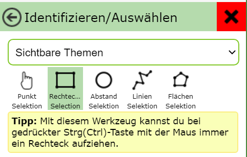
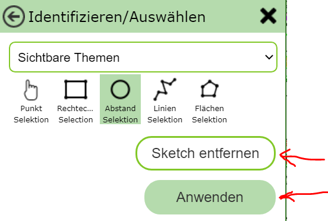

Identifizieren/Auswählen¶
Im Abschnitt Suchen und Abfragen wurde bereits behandelt, wie Geo-Daten mit dem Kartenviewer abgefragt werden können und wie die Ergebnisse interpretiert und behandelt werden sollten. Als Abfrage Werkzeug wurde dort das Standard Werkzeug benutzt, mit dem man Geo-Objekte einfach über einen Klick in die Karte abfragen kann. Für bestimmte Anwendungsfälle sind allerdings weitere Abfragemöglichkeiten notwendig, die von diesem Werkzeug bereit gestellt werden.
Bemerkung
der Unterschied zum Abfragen mit dem Standard Werkzeug ist, dass mit diesem Werkzeug die abgefragten Objekte sofort ausgewählt (cyan hinterlegt) werden.
Ein weitere Unterschied zum Standard Werkzeug ist hier, dass vorab in der Auswahlliste ausgewählt werden kann,
welches Thema abgefragt werden sollte. Möchte man sich diesbezüglich nicht festlegen, kann man hier auch
als Option Sichtbare Themen (alle sichtbar geschaltenen Themenebenen) oder Alle Themen (zusätzlich alle
Themen, die im aktuellen Kartenmaßtab theoretisch sichtbar geschalten werden könnten).
Bemerkung
Befinden sich in einer Karte sehr viele Themenebenen, kann die Abfrage über alle Themen einige Augenblicke dauern. Außerdem muss man sich in diesem Fall bei einer Mehrdeutigkeit in einem Zwischenschritt für das gewünschte Thema entscheiden (siehe Abschnitt Suchen und Abfragen) Das Abfragen eines bestimmten Themas liefert in der Regel sofort ein Ergebnis.
Das Identifizieren/Auswählen Werkzeug bietet folgende Sub-Werkzeuge an:
Punkt Selektion¶
Damit können Objekte über einfaches klicken in die Karte abgefragt werden. Bis auf den Unterschied, dass die abgefragten Objekte gleich ausgewählt werden, entspricht dieses Werkzeug dem Abfragen mit dem Standard Werkzeug.
Rechtecks Selektion¶
Dieses Sub-Werkzeug ist Standardmäßig ausgewählt, sobald das Identifizieren/Auswählen Werkzeug aus dem Werkzeugkasten ausgewählt wird.
Damit kann bei gedrückter Maustaste in er Karte ein rechteckiges Fenster aufgezogen werden. Die Abfrage erfolgt auf alle im Fenster befindlichen Objekte.
Kreis Selektion¶
Mit diesem Sub-Werkzeug kann ein Kreis gezeichnet werden, innerhalb dem Abgefragt werden sollte. Dazu muss man zuerst in die Karte klicken, um den Mittelpunkt des Kreises zu definieren. Bewegt man danach die Maus, wird bereits eine Vorschau für den Kreis inklusive Angabe für den Radius angezeigt. Um den Radius festzulegen, ist ein weitere Klick notwendig. Ist der Radius optimal, kann der Kreis durch einen weiteren Klick noch geändert werden.
Dem gesamten Kreis kann man mit dem Button Sketch entfernen los werden. Entspricht der Abfragekreis, kann die Abfrage mit dem Anwenden Button durchgeführt werden:
Wird über einen Kreis abgefragt, gibt es bei den Ergebnissen noch zwei Besonderheiten:
Die Sortierung der Ergebnisse erfolgt vom Abstand des abgefragten Objektes zum Mittelpunkt des Kreises
Die Entfernung zum Mittelpunkt des Kreises wird beim den Ergebnissen angezeigt
Linien Selektion¶
Hier kann eine Linie gezeichnet werden. Ist die Linie fertig, kann sie gleich wie bei der Kreis Selektion mit dem Anwenden Button die Abfrage gestartet werden. Abgefragt werden hier alle Objekte, die die gezeichnet Linie schneiden.
Flächen Selektion¶
Die Funktion dieses Sub-Werkzeugs entspricht der Linien Selektion Werkzeug. Allerdings wird hier eine Fläche gezeichnet und die Objekte unter dieser Fläche abgefragt.